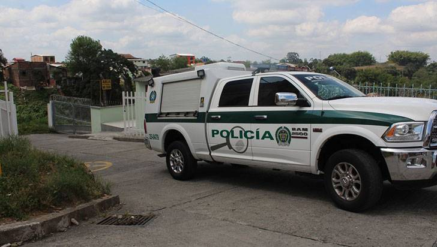

Para un hombre acusado de asesinar en octubre de 2021 al propietario del bar People, un local de ambiente en el Gayxample de Barcelona, para después robarle la billetera y otros objetos de valor que había en el domicilio del fallecidoLa Fiscalía pide 26 años y tres meses de prisión.
Además, solicita el pago de una indemnización de 150.000 euros, así como la imposición de una medida de libertad vigilada cinco años superior a la pena impuesta.
En un juicio que ha comenzado este lunes en la Audiencia de Barcelona tras la constitución del jurado popular, la Fiscalía ha solicitado 22 años de cárcel para el acusado por asesinato con alevosía, así como 4 años y tres meses por robo con violencia en casa habitada. leer más
Según han informado a EFE fuentes de la acusación, el juez del proceso leyó, en una vista celebrada este martes, la sentencia en la que considera probados los hechos que se le imputaban a Hanid Ortiz y le condena a 30 años de prisión, el máximo previsto en la legislación venezolana.
Un tribunal de Caracas (Venezuela) ha condenado a 30 años de cárcel al exmarine estadounidense Dahud Hanid Ortiz por matar a tres personas en un despacho de abogados del barrio madrileño de Usera en 2016, al considerar acreditado que fue el autor de los tres homicidios y del incendio provocado después. leer más
La policía científica examinó el piso en el que se encontraron los cadáveres este lunes por la tarde y descubrió que había puertas y ventanas precintadas y la llave del gas de la cocina abiertas.
Fuentes de la investigación señalan que presuntamente el padre, de 53 años, habría asesinado a sus hijos, Xavier y Noa, y después se habría suicidado llenando la casa de monóxido de carbono. Así, la autopsia revelará cómo los mató, ya que los cadáveres de los menores no presentaban lesiones externas cuando los bomberos de Barcelona entraron en la vivienda.
El Juzgado de Instrucción número 26 de Barcelona está a la espera de la autopsia de los dos menores, de 10 y 7 años, y de su padre, Francisco B.M., encontrados muertos por inhalación de monóxido de carbono en unos bajos del paseo Universal de Barcelona este lunes.Los Mossos d'Esquadra sospechan que se trata de un caso de violencia vicaria por lo que el padre, presuntamente, había querido matar a sus hijos y suicidarse para dañar a la madre, de la que estaba separado desde hacía tres años. leer más
Los Mossos d'Esquadra investigan la muerte de un hombre en Vilanova de la Barca (Lleida). La víctima, un agricultor, fue encontrada por un familiar con un golpe en la cabeza y sangre abundanete e inconsciente en una finca agrícola de este municipio. Los agentes recibieron el aviso sobre las dos de la tarde. Al lugar acudieron varias patrullas policiales y también efectivos del Sistema de Emergencias Médicas.
Los sanitarios no pudieron hacer nada para salvar la vida a la víctima que murió poco después por las heridas que sufrió en la cabeza, según fuentes policiales. Los Mossos buscan a varios sospechosos del crimen que podrían haber huido con el coche del agricultor fallecido, por lo que han activado varios dispositivos para atraparlos. Así, se han realizado controles en varias vías en dirección a Francia.